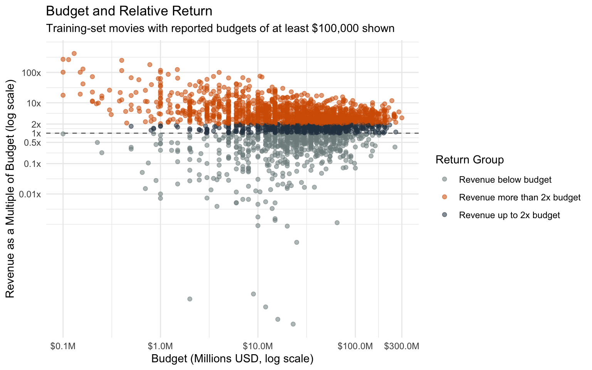
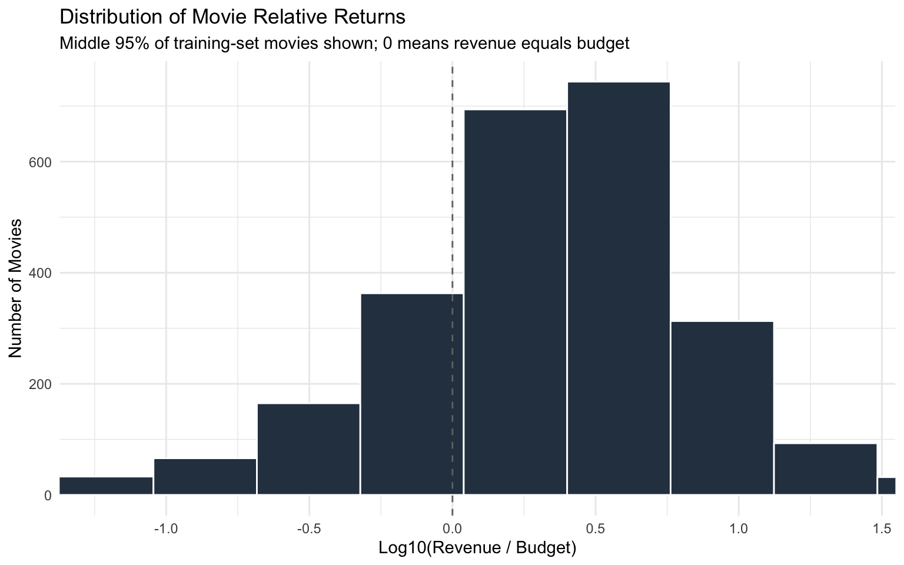
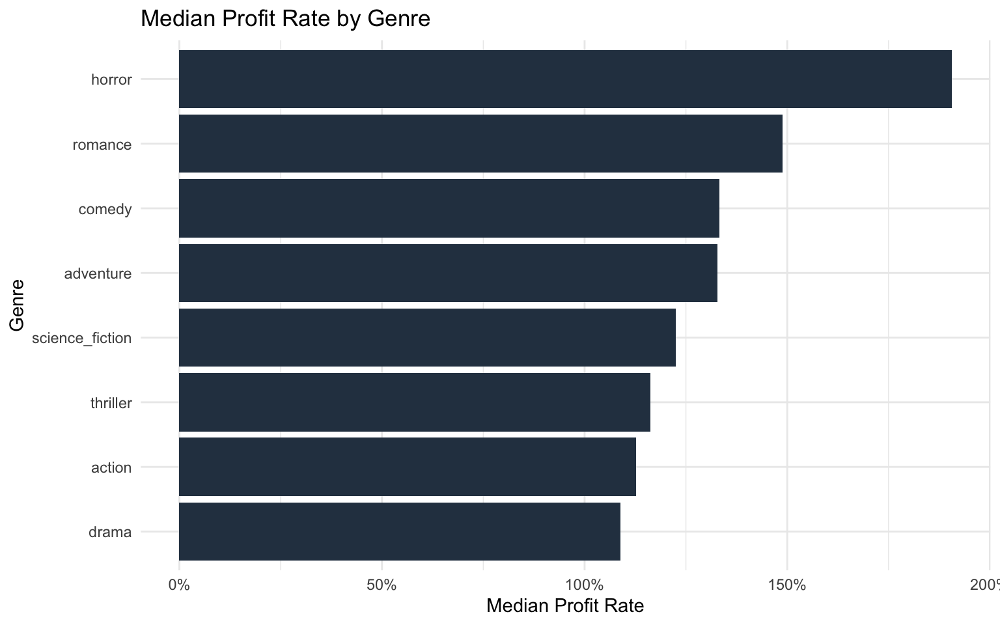

What Makes a Movie Pay Back Its Budget?
Summary
This project asks a simple question:
Which movies make the most money back for each dollar spent?
To answer that, I use the TMDB 5000 Movie Dataset and compare movies by revenue divided by budget. This is better than looking only at total profit because a $100 million profit means something very different for a $5 million movie than it does for a $200 million movie.
My main response variable is log_return, which is:
\[ \log_{10}\left(\frac{\text{revenue}}{\text{budget}}\right) \]
A log_return of 0 means a movie earned exactly its budget. Positive values mean it earned more than its budget, and negative values mean it earned less.
The main pattern is clear: bigger movies are not automatically better investments. Some smaller movies earned many times their budgets, while some expensive movies failed to earn back what they cost. The regression tree points in the same direction: budget matters, but it does not fully predict profitability.
Motivation and Context
Movies are expensive and risky products. A large revenue total can look successful, but revenue alone does not tell the whole story because movies begin with very different budgets. A movie that earns $100 million on a $5 million budget has a very different financial outcome from a movie that earns $100 million on a $200 million budget.
For that reason, this project focuses on return relative to cost. I use revenue divided by budget, then take a base-10 logarithm because movie returns vary by a very large amount. The log transformation keeps a few extreme low-budget movies from dominating the analysis.
This question is interesting because movie success is affected by many factors: genre, production cost, release timing, audience interest, reviews, marketing, and whether a movie is connected to a franchise. The dataset does not include all of those factors, so the goal is not to perfectly predict success. Instead, the goal is to understand whether the available characteristics help explain some differences in movie return.
Packages Used In This Analysis
The chunk below loads the packages used in the analysis. I used individual package names instead of loading the umbrella tidyverse or tidymodels packages.
library(here)
library(readr)
library(dplyr)
library(stringr)
library(tidyr)
library(ggplot2)
library(scales)
library(rsample)
library(recipes)
library(parsnip)
library(workflows)
library(tune)
library(dials)
library(yardstick)
library(broom)
library(purrr)
library(tibble)
library(rpart)| Package | Use |
|---|---|
| here | to locate the project folder and import the CSV file |
| readr | to read the movie dataset from a CSV file |
| dplyr | to filter, mutate, and summarize the data |
| stringr | to extract release months and identify genre keywords |
| tidyr | to reshape genre indicator variables for plotting |
| ggplot2 | to create the visualizations |
| scales | to format dollar amounts, percentages, and axis labels |
| rsample | to create training/test splits and cross-validation folds |
| recipes | to define preprocessing steps for the model |
| parsnip | to specify the regression tree model |
| workflows | to combine the recipe and model into one workflow |
| tune | to tune the tree’s cost-complexity parameter |
| dials | to create a tuning grid |
| yardstick | to calculate model performance metrics |
| broom | to help organize model output |
| purrr | to calculate repeated model diagnostics cleanly |
| tibble | to create tidy summary tables |
| rpart | to fit the regression tree engine |
Data Description
The data come from the TMDB 5000 Movie Dataset, which is based on movie metadata from The Movie Database and is distributed on Kaggle. Each row represents one movie. The dataset includes variables such as budget, revenue, genre, runtime, release date, popularity, vote average, vote count, production companies, and production countries.
This project uses budget and revenue to construct the response variable, and it uses runtime, release month, and common genre indicators as explanatory variables. The dataset is observational, so the results describe associations rather than proving that one variable causes higher or lower profitability.
At the end of this section, I import the data.
movies_raw <- readr::read_csv(
here::here("tmdb_5000_movies.csv"),
show_col_types = FALSE
)
dplyr::glimpse(movies_raw)Rows: 4,803
Columns: 20
$ budget <dbl> 2.37e+08, 3.00e+08, 2.45e+08, 2.50e+08, 2.60e+08,…
$ genres <chr> "[{\"id\": 28, \"name\": \"Action\"}, {\"id\": 12…
$ homepage <chr> "http://www.avatarmovie.com/", "http://disney.go.…
$ id <dbl> 19995, 285, 206647, 49026, 49529, 559, 38757, 998…
$ keywords <chr> "[{\"id\": 1463, \"name\": \"culture clash\"}, {\…
$ original_language <chr> "en", "en", "en", "en", "en", "en", "en", "en", "…
$ original_title <chr> "Avatar", "Pirates of the Caribbean: At World's E…
$ overview <chr> "In the 22nd century, a paraplegic Marine is disp…
$ popularity <dbl> 150.43758, 139.08262, 107.37679, 112.31295, 43.92…
$ production_companies <chr> "[{\"name\": \"Ingenious Film Partners\", \"id\":…
$ production_countries <chr> "[{\"iso_3166_1\": \"US\", \"name\": \"United Sta…
$ release_date <date> 2009-12-10, 2007-05-19, 2015-10-26, 2012-07-16, …
$ revenue <dbl> 2787965087, 961000000, 880674609, 1084939099, 284…
$ runtime <dbl> 162, 169, 148, 165, 132, 139, 100, 141, 153, 151,…
$ spoken_languages <chr> "[{\"iso_639_1\": \"en\", \"name\": \"English\"},…
$ status <chr> "Released", "Released", "Released", "Released", "…
$ tagline <chr> "Enter the World of Pandora.", "At the end of the…
$ title <chr> "Avatar", "Pirates of the Caribbean: At World's E…
$ vote_average <dbl> 7.2, 6.9, 6.3, 7.6, 6.1, 5.9, 7.4, 7.3, 7.4, 5.7,…
$ vote_count <dbl> 11800, 4500, 4466, 9106, 2124, 3576, 3330, 6767, …The original data include 4803 movies and 20 variables. Some movies have missing or zero budget and revenue values, so I removed those rows before modeling relative return.
Data Wrangling
The main data wrangling step is creating variables that measure movie return relative to budget. I also created genre indicator variables because the genres column stores genre information as text.
movies <- movies_raw |>
dplyr::filter(
status == "Released",
budget > 0,
revenue > 0,
!is.na(runtime),
!is.na(release_date)
) |>
dplyr::mutate(
profit = revenue - budget,
profit_rate = profit / budget,
return_multiple = revenue / budget,
log_return = log10(return_multiple),
log_budget = log10(budget),
release_month = as.numeric(stringr::str_sub(as.character(release_date), 6, 7)),
action = dplyr::if_else(stringr::str_detect(genres, "Action"), 1, 0),
adventure = dplyr::if_else(stringr::str_detect(genres, "Adventure"), 1, 0),
comedy = dplyr::if_else(stringr::str_detect(genres, "Comedy"), 1, 0),
drama = dplyr::if_else(stringr::str_detect(genres, "Drama"), 1, 0),
horror = dplyr::if_else(stringr::str_detect(genres, "Horror"), 1, 0),
romance = dplyr::if_else(stringr::str_detect(genres, "Romance"), 1, 0),
thriller = dplyr::if_else(stringr::str_detect(genres, "Thriller"), 1, 0),
science_fiction = dplyr::if_else(stringr::str_detect(genres, "Science Fiction"), 1, 0)
)
dplyr::bind_rows(
tibble::tibble(
data = "Original",
n_movies = nrow(movies_raw),
n_variables = ncol(movies_raw)
),
tibble::tibble(
data = "Cleaned",
n_movies = nrow(movies),
n_variables = ncol(movies)
)
)# A tibble: 2 × 3
data n_movies n_variables
<chr> <int> <int>
1 Original 4803 20
2 Cleaned 3228 34After filtering to released movies with usable budget, revenue, runtime, and release date information, the cleaned dataset contains 3228 movies. I created profit, profit_rate, return_multiple, log_return, log_budget, release_month, and genre indicator variables.
set.seed(1880)
movies_split <- rsample::initial_split(
movies,
prop = 0.80,
strata = log_return
)
movies_train <- rsample::training(movies_split)
movies_test <- rsample::testing(movies_split)
dplyr::bind_rows(
movies_train |>
dplyr::summarize(
data_set = "Training",
n = dplyr::n(),
median_log_return = median(log_return),
median_profit_rate = median(profit_rate)
),
movies_test |>
dplyr::summarize(
data_set = "Testing",
n = dplyr::n(),
median_log_return = median(log_return),
median_profit_rate = median(profit_rate)
)
) |>
dplyr::mutate(
median_log_return = round(median_log_return, 3),
median_profit_rate = scales::percent(median_profit_rate, accuracy = 0.1)
)# A tibble: 2 × 4
data_set n median_log_return median_profit_rate
<chr> <int> <dbl> <chr>
1 Training 2580 0.362 130.0%
2 Testing 648 0.364 131.2% I used an 80/20 training/test split. The training set is used for exploration, cross-validation, and model fitting. The test set is held out until the final model evaluation.
Exploratory Data Analysis
Raw profit rates can be extreme when a movie has a very small reported budget. For example, a low-budget movie that earns a modest amount of money can have a very large return multiple. Because of that, I used log_return for the main modeling response.
movies_train |>
dplyr::summarize(
median_budget = median(budget),
median_profit = median(profit),
median_return_multiple = median(return_multiple),
median_profit_rate = median(profit_rate),
median_log_return = median(log_return)
) |>
dplyr::mutate(
median_budget = scales::dollar(median_budget),
median_profit = scales::dollar(median_profit),
median_return_multiple = paste0(round(median_return_multiple, 2), "x"),
median_profit_rate = scales::percent(median_profit_rate, accuracy = 0.1),
median_log_return = round(median_log_return, 3)
)# A tibble: 1 × 5
median_budget median_profit median_return_multiple median_profit_rate
<chr> <chr> <chr> <chr>
1 $25,000,000 $26,310,465 2.3x 130.0%
# ℹ 1 more variable: median_log_return <dbl>In the training set, the median movie had a budget of about $25 million and earned about 2.3 times its budget. This means the typical movie in the cleaned training data earned more than its reported production cost, but some very small-budget movies can still have unusually large return rates.
log_return_limits <- quantile(movies_train$log_return, probs = c(0.025, 0.975))
ggplot(movies_train, aes(x = log_return)) +
geom_histogram(bins = 35, fill = "#2C3E50", color = "white") +
geom_vline(xintercept = 0, linetype = "dashed", color = "gray45") +
coord_cartesian(xlim = log_return_limits) +
labs(
title = "Distribution of Movie Relative Returns",
subtitle = "Middle 95% of training-set movies shown; 0 means revenue equals budget",
x = "Log10(Revenue / Budget)",
y = "Number of Movies"
)
Most movies earned more than their reported budget, so most values are to the right of 0. The dashed line at 0 means revenue equals budget; values to the right mean the movie earned more than its budget, while values to the left mean it earned less. The distribution is still skewed, but the log transformation reduces the influence of extreme low-budget movies.
budget_return_plot <- movies_train |>
dplyr::filter(budget >= 100000) |>
dplyr::mutate(
return_group = dplyr::case_when(
log_return < 0 ~ "Revenue below budget",
log_return < log10(2) ~ "Revenue up to 2x budget",
TRUE ~ "Revenue more than 2x budget"
)
)
ggplot(budget_return_plot, aes(x = budget, y = log_return, color = return_group)) +
geom_hline(yintercept = 0, linetype = "dashed", color = "gray45") +
geom_point(alpha = 0.55, size = 1.6) +
scale_x_log10(
breaks = c(1e5, 1e6, 1e7, 1e8, 3e8),
labels = scales::label_dollar(scale = 1e-6, suffix = "M", accuracy = 0.1)
) +
scale_y_continuous(
breaks = log10(c(0.01, 0.1, 0.5, 1, 2, 10, 100)),
labels = c("0.01x", "0.1x", "0.5x", "1x", "2x", "10x", "100x")
) +
scale_color_manual(
values = c(
"Revenue below budget" = "#7F8C8D",
"Revenue up to 2x budget" = "#2C3E50",
"Revenue more than 2x budget" = "#D55E00"
)
) +
labs(
title = "Budget and Relative Return",
subtitle = "Training-set movies with reported budgets of at least $100,000 shown",
x = "Budget (Millions USD, log scale)",
y = "Revenue as a Multiple of Budget (log scale)",
color = "Return Group"
)
This graph shows that high relative return is not only a big-budget pattern. Values above 1x mean the movie earned more than its budget, while values below 1x mean it earned less than its budget. Some smaller movies earned many times their budget, while some expensive movies did not earn back their reported budget. The $100,000 cutoff is only used for this graph so very tiny reported budgets do not distort the log-scale axis.
movies_train |>
dplyr::select(
profit_rate,
action, adventure, comedy, drama,
horror, romance, thriller, science_fiction
) |>
tidyr::pivot_longer(
cols = -profit_rate,
names_to = "genre",
values_to = "has_genre"
) |>
dplyr::filter(has_genre == 1) |>
dplyr::group_by(genre) |>
dplyr::summarize(
n = dplyr::n(),
median_profit_rate = median(profit_rate),
.groups = "drop"
) |>
dplyr::arrange(median_profit_rate) |>
ggplot(aes(x = reorder(genre, median_profit_rate), y = median_profit_rate)) +
geom_col(fill = "#2C3E50") +
coord_flip() +
scale_y_continuous(labels = scales::percent) +
labs(
title = "Median Profit Rate by Genre",
x = "Genre",
y = "Median Profit Rate"
)
I used profit_rate for this graph because percentages are easier to interpret than logged values when comparing genres. The graph shows median profit relative to budget, not total dollar profit. Horror has the highest median profit rate, which means horror movies in this dataset tended to earn more profit relative to what they cost. Because movies can belong to more than one genre, these bars describe genre membership rather than exclusive genre categories.
Modeling
For the modeling section, I used one supervised learning model: a regression tree. The response variable is log_return, which is numeric, so this is a regression problem.
A regression tree predicts a numeric response by splitting the data into smaller groups. At each split, the tree chooses a variable and cutoff that reduce prediction error. The final predictions are based on the average response in each terminal node. This model is useful here because it can capture nonlinear patterns and simple interactions, while still being easier to interpret than many black-box models.
The predictors in the model are log_budget, runtime, release_month, and genre indicator variables.
set.seed(437)
movie_folds <- rsample::vfold_cv(
movies_train,
v = 5,
repeats = 2,
strata = log_return
)
profit_recipe <- recipes::recipe(
log_return ~ log_budget + runtime + release_month +
action + adventure + comedy + drama +
horror + romance + thriller + science_fiction,
data = movies_train
)
tree_model <- parsnip::decision_tree(
mode = "regression",
cost_complexity = tune::tune()
) |>
parsnip::set_engine("rpart")
tree_workflow <- workflows::workflow() |>
workflows::add_model(tree_model) |>
workflows::add_recipe(profit_recipe)The cost_complexity parameter controls how much the tree is penalized for adding more splits. Tuning this parameter helps avoid a tree that is too complicated and overfits the training data.
regression_metrics <- yardstick::metric_set(yardstick::rmse, yardstick::rsq, yardstick::mae)
tree_grid <- dials::grid_regular(
dials::cost_complexity(range = c(-4, -1)),
levels = 10
)
tree_tune <- tune::tune_grid(
tree_workflow,
resamples = movie_folds,
grid = tree_grid,
metrics = regression_metrics
)
best_tree <- tune::select_best(tree_tune, metric = "rmse")
best_tree# A tibble: 1 × 2
cost_complexity .config
<dbl> <chr>
1 0.0215 pre0_mod08_post0I selected the tuned tree using RMSE because RMSE measures the typical prediction error in the same units as log_return, with extra penalty for larger errors.
tree_cv <- tune::collect_metrics(tree_tune) |>
dplyr::inner_join(best_tree, by = "cost_complexity") |>
dplyr::select(.metric, mean, std_err, cost_complexity)
tree_cv |>
dplyr::mutate(
mean = round(mean, 3),
std_err = round(std_err, 3),
cost_complexity = signif(cost_complexity, 3)
)# A tibble: 3 × 4
.metric mean std_err cost_complexity
<chr> <dbl> <dbl> <dbl>
1 mae 0.458 0.007 0.0215
2 rmse 0.682 0.021 0.0215
3 rsq 0.047 0.011 0.0215The cross-validation results show that the regression tree has modest predictive power. This is not surprising because the model uses only budget, runtime, release month, and broad genre categories. Many important movie-success factors, such as marketing, franchise popularity, cast, reviews, competition, and audience interest, are not included in this dataset.
final_tree_workflow <- tune::finalize_workflow(tree_workflow, best_tree)
tree_fit <- parsnip::fit(final_tree_workflow, data = movies_train)
tree_predictions <- broom::augment(tree_fit, new_data = movies_test)
test_results <- yardstick::metrics(
tree_predictions,
truth = log_return,
estimate = .pred
)
test_results |>
dplyr::mutate(.estimate = round(.estimate, 3))# A tibble: 3 × 3
.metric .estimator .estimate
<chr> <chr> <dbl>
1 rmse standard 0.638
2 rsq standard 0.109
3 mae standard 0.447The test-set results are similar to the cross-validation results. The model can identify some broad patterns, but it does not fully explain movie profitability. I would not use this model by itself to predict whether a future movie will be financially successful.
tree_fit |>
parsnip::extract_fit_engine()n= 2580
node), split, n, deviance, yval
* denotes terminal node
1) root 2580 1256.65600 0.2949276
2) log_budget>=5.622262 2532 1119.81600 0.2738593 *
3) log_budget< 5.622262 48 76.43137 1.4062770 *The regression tree’s main split is based on budget. The smaller-budget branch has a higher predicted relative return, but I interpret this cautiously because high return multiples among small-budget movies are not guaranteed. The result suggests that very expensive movies may produce large total revenue, but they have a harder time earning many times their budget.
Insights/Conclusion
The goal of this project was to study which movie characteristics are associated with higher return multiples, meaning higher revenue compared with budget. Measuring profitability this way makes the analysis fairer because it compares movies by return relative to cost, not only by total dollars.
The exploratory analysis showed that high relative return is not limited to expensive movies. Some smaller movies earned many times their budgets, while some large-budget movies did not earn enough revenue to match their reported production costs. Genre also mattered in a broad descriptive sense: horror movies had the highest median profit rate among the genre indicators considered.
The regression tree supported the same main idea. Budget was the model’s most important split, and smaller-budget movies sometimes had stronger returns relative to cost. However, the model’s predictive performance was limited, so budget, runtime, release month, and genre explain only part of the variation in movie profitability.
Overall, I would describe the main finding as: movie profitability depends partly on budget and genre, but these variables do not fully predict success. The data support the idea that lower-budget movies can have stronger relative returns, but movie success is still shaped by many missing factors.
Limitations and Future Work
There are several limitations in this analysis. First, the data contain reported budget and revenue values, which may not fully represent all production, marketing, distribution, or international revenue details. Second, the dataset does not include important predictors such as advertising spending, cast, director, franchise status, release competition, reviews, streaming performance, or audience sentiment. Third, the analysis is observational, so it describes associations rather than causal effects.
The regression tree also has limited predictive power. Future work could compare more models, such as random forests or boosted trees, and could add richer variables from other data sources. It would also be useful to study which movies are predicted poorly, because those cases might reveal missing factors that strongly affect profitability.
There are ethical concerns around how these results could be used. If studios relied too heavily on simple profitability models, they might avoid funding original or niche films that do not match past patterns. A model like this should be treated as one small source of information, not as a complete judgment about which movies deserve to be made.